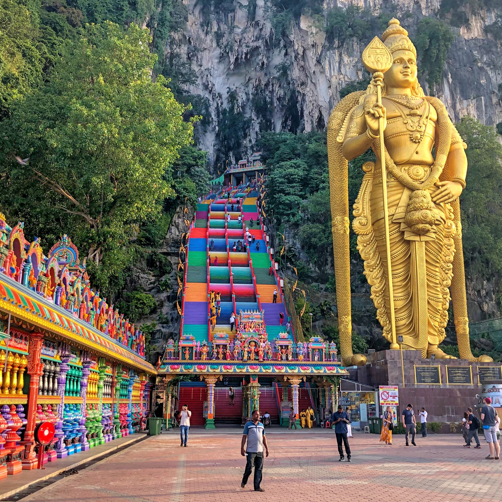

The Gombak District is an administrative district located in the state of Selangor, Malaysia. The district was created on February 1, 1974, the same day when Kuala Lumpur was declared a Federal Territory. Until 1997, Rawang was the district capital; the capital has been moved to Bandar Baru Selayang. Gombak borders Kuala Lumpur to the southeast and the Genting Highlands to the east. Both Gombak and Kuala Lumpur, along with some other districts in Selangor, are situated within the Klang Valley. Other localities that are situated in Gombak district include Batu Arang, Kuang, Rawang, Bandar Kundang, Gombak Town, Selayang, Kepong and Hulu Kelang.
I was born at Hospital Kampung Baru, Kuala Lumpur and raise in Gombak, Selangor. In this district is where I raise by my lovely family. I could say that I'am proud to be Gombakians. A place where you can get almost everything that you wish for. We have a lot of Restaurants, Food Stalls, Recreational Park, you name it!
We have varities of interesting places to visit in Gombak such as Batu Caves, Taman Metropolitan Kepong, Taman Rimba Templer, Bukit Tabur and many more.